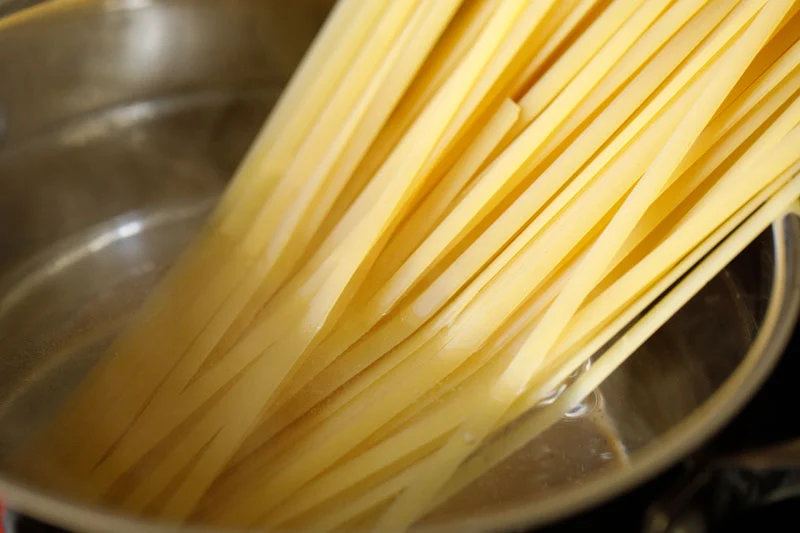
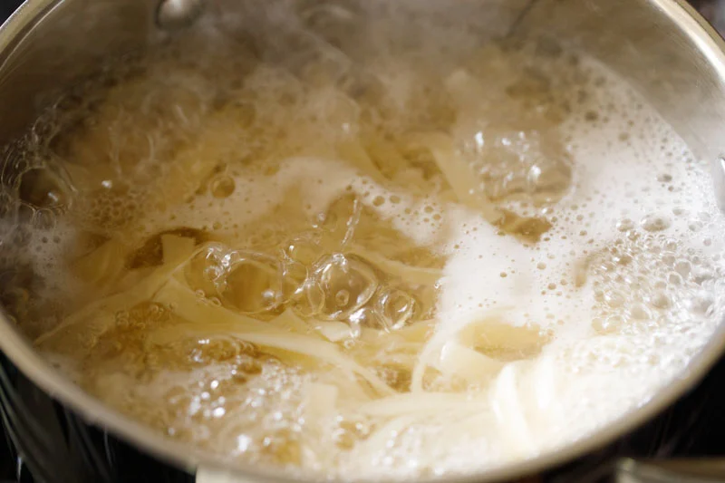

Ingredients
-
Prep Time
20 minutes mins -
Cook Time
10 minutes mins -
Total Time
30 minutes mins -
Cuisine
Italian, World -
Course
Brunch,
Main Course,
Snacks Diet
Vegetarian-
Difficulty Level
Moderate
Step-by-Step Guide
 - In a deep pan or a sauce pan on the stovetop add 6 cups of water and 1 to 1.5 teaspoons of salt.
- Stir, turn the heat onto high and bring the water to a boil.
- Once the water is to a full boil, add the 226 grams (½ a pound or 8 ounces) of fettuccine pasta or other pasta of choice.
- Use a spoon to push the fettuccine down into the boiling water as they soften, until fully submerged.
- Continue to boil the pasta on medium to high heat.
- Cook according to package instructions, until the pasta is just al dente. That means cooked through but with a slight bite – so that the pasta are still toothsome.
- Drain the water, making sure to save and set aside about a ½ cup of the cooked pasta water. You might want to use a bit to thin out the alfredo sauce.
- While the pasta is boiling, start to prepare the alfredo sauce. In a medium, deep skillet melt 3 to 4 tablespoons of salted or unsalted butter (approximately 40 grams) on low heat. If using salted butter you’ll want to add less salt to finish the dish.
- Once the butter has melted, add ½ a teaspoon of finely chopped garlic. Sauté for a few seconds until the raw aroma of garlic goes away. No need to brown the garlic.
- Next add 1 cup of heavy whipping cream.
- Mix well with a wired whisk. Bring the cream to a gentle boil on low heat.
Use a whisk and continuously stir as you bring the cream mixture to a low simmer. Keep an eye on the cream to make sure it does not get brown or burnt.
- After the cream begins to gently boil, further simmer for 1 to 2 minutes, until the cream thickens a bit.
- Then add 6 tablespoons (50 grams) of grated vegetarian parmesan cheese to the pan.
- Mix well to combine the cheese with the cream.
- Now add the cooked and drained pasta to the prepared alfredo sauce in the pan.
- Use tongs to thoroughly mix the pasta and sauce together, so that every noodle is coated in creamy alfredo.
- Continue to cook the fettuccine alfredo on low heat for another minute or two, stirring frequently to keep the pasta from sticking together.
If the sauce becomes too thick, add a bit of the reserved pasta water, and stir.
- Taste the dish, and season with salt according to your taste preferences and a ¼ teaspoon of crushed black pepper.
I also recommend adding a light grating of fresh nutmeg for an earthy, aromatic pop of flavor.
- Mix the fettuccine alfredo again, and turn off the heat.
fettuccine alfredo in pan
- Serve the pasta hot. I like to garnish fettuccine alfredo with a tablespoon of grated vegetarian parmesan cheese and 1 to 2 teaspoons of chopped parsley, fresh or dried.
Leftovers will keep well stored in an airtight container for 1 to 2 days in the refrigerator. On refrigeration the pasta will thicken, so while reheating add a splash of milk or water to thin the consistency slightly.
Cooking Fettuccine
In a deep pan or a sauce pan add water and salt. Stir. Place saucepan on stovetop and bring the water to a boil on high heat. Once the water comes to a boil, add the fettuccine pasta or other pasta of choice. Use a spoon to push the fettuccine down into the boiling water as they soften, until fully submerged. Cook pasta according to package instructions or until the al dente. That means cooked through but with a slight bite. Boil fettuccine on medium to high heat. Drain the water, making sure to save and set aside about a ½ cup of the cooked pasta water. You might want to use a bit to thin out the alfredo sauce. Making Alfredo Sauce
Meanwhile when the pasta is cooking, begin to make the alfredo sauce. In a large, deep skillet melt salted or unsalted butter on low heat. If using salted butter you’ll want to add less salt to finish the dish. Once the butter has melted, add chopped garlic. Sauté for a few seconds until the raw aroma of garlic goes away. There is no need to brown the garlic. Add the whipping cream. Mix well with a wired whisk. Bring the cream to a gentle boil on low heat. With a whisk continuously stir as you bring the cream mixture to a low simmer on a low heat. Keep an eye on the cream to ensure it does not get burnt or brown. Once the cream begins to gently boil, further simmer for 1 to 2 minutes on low heat, until the cream thickens a bit. Add grated vegetarian parmesan cheese to the cream and mix well.
Add the cooked and drained pasta to the prepared alfredo sauce in the pan With the help of tongs thoroughly mix the pasta and sauce together, so that every pasta is coated in the creamy Alfredo.
Continue to cook the fettuccine alfredo on low heat for another minute or two, stirring frequently to keep the pasta from sticking or clumping together. If the sauce becomes too thick, add a bit of the reserved pasta water, and stir to combine. Taste the dish, and season with salt as needed and crushed black pepper. I also recommend adding a dash of freshly grated nutmeg. Mix again, and turn off the heat.
Serve the pasta hot. Garnish fettuccine alfredo with grated vegetarian parmesan cheese and chopped parsley or soft fresh herb of your choice. Store any leftovers in an airtight container for 1 to 2 days in the refrigerator. While reheating, add a bit of water or milk to thin the consistency slightly. Notes
Cream: I have used whipping cream in this alfredo sauce recipe. However, for a lighter version you can use low fat/light cream or cooking cream or half and half.
Butter: Make the alfredo sauce with salted or unsalted butter. If using salted butter, then be mindful of salt when adding later to the pasta.
Seasonings: The seasonings are minimal in this dish. You can spice it up by adding a bit more of crushed black pepper. You can also use white pepper or cayenne pepper.
Veggies: My vegetarian recipe of fettuccine alfredo is super simple, but feel free to add your favorite cooked veggies. You can either sauté, steam or roast them. Broccoli, carrots, green peas, sweet corn, mushrooms, bell peppers, baby corn, asparagus, cauliflower, spinach – or any vegetables you like are some delicious options.
Pasta: Traditionally, alfredo sauce is served with fettuccine. But you really can use any pasta you prefer or like. Make this delicious alfredo pasta with penne, pappardelle, macaroni, rigatoni, farfalle, or whatever you’ve got.
Nutrition Info (Approximate Values)
Nutrition Facts
Fettuccine Alfredo Recipe | Alfredo Pasta
Amount Per Serving
Calories 712 Calories from Fat 423
% Daily Value*
Fat 47g72%
Saturated Fat 28g175%
Trans Fat 1g
Polyunsaturated Fat 3g
Monounsaturated Fat 13g
Cholesterol 210mg70%
Sodium 646mg28%
Potassium 264mg8%
Carbohydrates 57g19%
Fiber 3g13%
Sugar 2g2%
Protein 17g34%
Vitamin A 1662IU33%
Vitamin B1 (Thiamine) 1mg67%
Vitamin B2 (Riboflavin) 1mg59%
Vitamin B3 (Niacin) 2mg10%
Vitamin B6 1mg50%
Vitamin B12 1µg17%
Vitamin C 1mg1%
Vitamin D 1µg7%
Vitamin E 1mg7%
Vitamin K 6µg6%
Calcium 236mg24%
Vitamin B9 (Folate) 27µg7%
Iron 2mg11%
Magnesium 61mg15%
Phosphorus 316mg32%
Zinc 2mg13%
* Percent Daily Values are based on a 2000 calorie diet.
Critique doc recipe and photos link https://www.vegrecipesofindia.com/pasta-in-alfredo-sauce-recipe/
Recipe Websites
Fettuccine alfredo.This website is well organized and full of color. With one search you can access multiple recipe options. Although there are ads they don't distract and mostly relate to cooking.
foodnetwork. This website is well organized and effectively branded. Gives you a list of multiple new recipes for you to try as well as the ability to look up your own. Provides you with their latest recipes.
allrecipes. This website has an extensive list of recipes for every recipe you search. Gives you the option to look for recipes by occasion. Well organized and easy to navigate.
Other Websites
lacoste-heritage. This website provides a colorful display of their products. They also include a section for different places in the world.
unseen. This Website provides a 3D experience. It also has a unique loading page.
fpp.This website also has a unique loading page. It also provides an interactive experience.